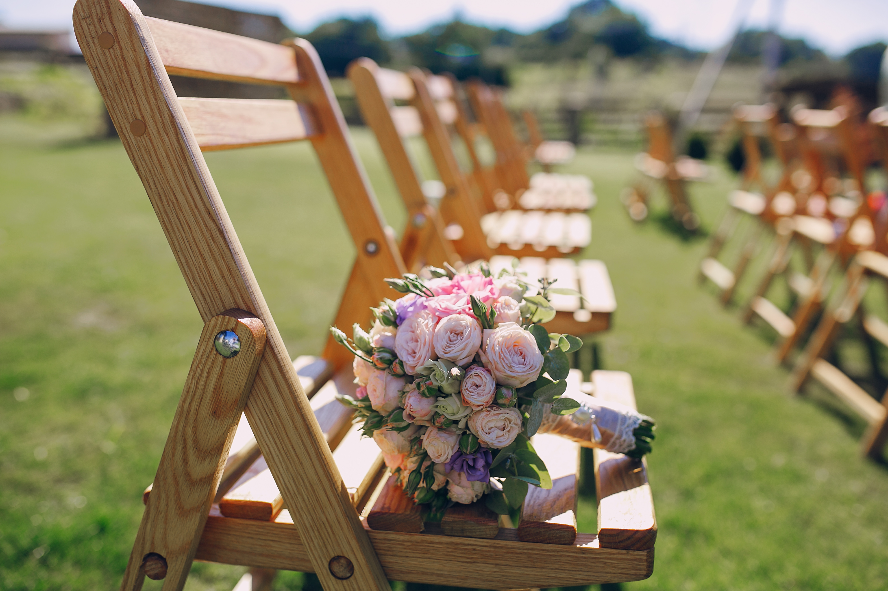
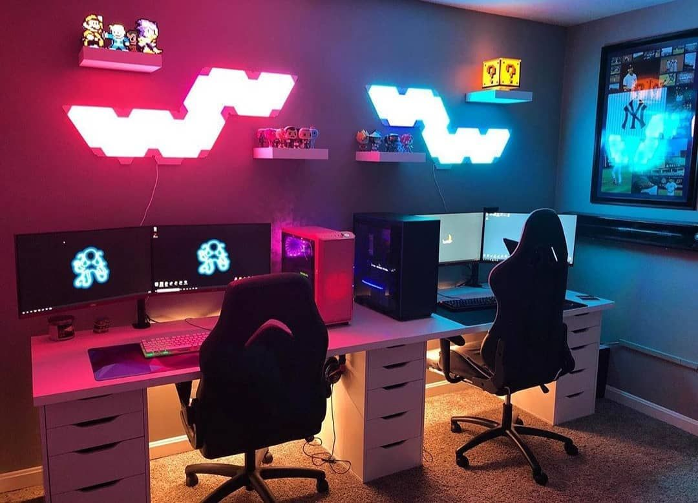
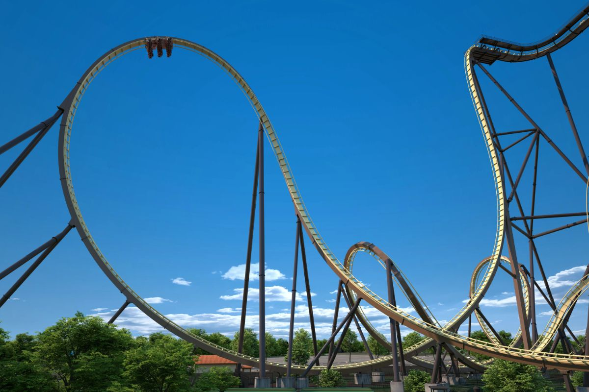

O Que Nos Espera
Nossos Planos

O Grande Dia — para sempre juntos

Campos de Jordão — entre as montanhas

Setup do Casal — nosso cantinho

Paraquedismo — voar juntos
próximo destino

Nossa Casa — nosso lar, nossa história

Adrenalina a dois — montanha-russa juntos

Escalada — Mount Everest
última etapa
Viagem
Jerusalém
Casamento
Uma família com leveza e alegria
Casamento
Cumprir o Chamado de Deus